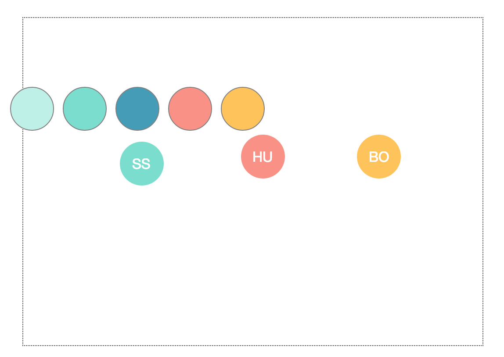

Hello, my name is Lauren and I am an undergraduate at MIT class of 2018. I am currently majoring in Mechanical Engineering with a minor in Computer Science and concentration in Design. I have a wide range of experience from Robotics, Product Design, User-Interface Design and coding, basics of computer science, and even a little in Finance.
Why such a broad spectrum? Because it doesn't hurt to explore. After my 2+ years at MIT, I realized I just love to make things. Whether its design, programming, or machining, I hope to build the knowledge and skills to one day create a product that will make an impact.
2.008 taught me to design for mass manufacturing and work as a team member. The course exposed me to various methods used in mass manufacturing and how to choose and design for a specific process to balance cost, rate, quality, and flexibility.
The yoyo design my team created was inspired by the solar system. When the yoyo is thrown, the ball bearings,represents the planets, in the orbital tracks roll around and the led light in the middle, the sun, lights up.
I worked on producing the lid seal ring for the yoyo. The critical dimension of the lid seal was the inner diameter of the snap fit with the yoyo body. A 0.01 inch interference ensured the yoyo held together and would survive drop tests. The mold of the part was designed in solidworks, later transfered to Mastercam for CNC lathe work.
I also went through many interations of injection mold testing to find a optimal parameters that gave the ideal shrinkage and fit the designed tolerances.
The resulting part had a perfect 0.01 inch interference and was easily mass produced on the ENGEL injection molding machine.

More details on the project can be found on our team blog.
The class in essense was a robotics competition. There was a game board and there were various ways a robot could score points under a time constraint. The goal of the competition was the build a robot that scored as many points as possible. The theme in 2016 was the American revolution, focused on the midnight ride of Paul Revere.
I was very excited to take this class because it will be the first time I will make a fully functioning robot independently. In previous years I worked in teams and have helped CAD and design specific mechanisms of a robot for FIRST and VEX Robotics competition.
For this competition, I decided to build a robot that would lift the "lantern" approximately 36 inches above ground and place it inside the "Old North Church".
I considered various designs such as scissor lifts, rack n pinion, multistage lifts, and protyped them quickly with cardboard and foam. I tried to CAD potential grippers for grabbing lanterns, which would be attached to the lifting arm.
One of the most important calculations I did for this robot was calculating the torque of the given motors and see which ones were powerful enough to lift a heavy mechanism.
The mechanism I decided to go with was a multi-stage lift driven by a winch, string, and mini-pulleys. I chose a multi stage lift because it reached more height than a 6 bar lift, and more controllable than a scissor lift. If I opted for a rack n pinion, I would still have to build a multi-layer lift, and finding the right fit for a slot to limit movement of the rack n pinion would be a challenge.
For the first half of the class I built a prototype to test the multi-level lift. I found out my design did not have enough restraints on unwanted degrees of freedom.
During full production, I went with a design where each level is stacked in front of the previous level, and is connected and restrained by a sliding slot and linear bearing. My inspiration came from sliding drawers. The biggest issue I ran into with this design was minizing friction between levels, around the slot, while still giving enough constraint to allow only 1 degree of freedom.
For the final design, I had a multi-level lift with four wheeled two-wheel drive, which used less power than 4 wheel drive and was easier to control, and a spectula-like lantern lift, which was simple to make, modify, and took advantage of the fact the "lanterns" had two "legs" creating a slot underneath.
Although my robot was not a winning robot, I learned a lot throughout the process. I learned how to better manage my time make the lab hours fit into my schedule. I learned to be patient, and that starting over, or a new design, or more precisely manufactured part is not always the solution. I learned to problem solve and improve upon the existing design to make things work, much like debugging in coding. I learned to ask questions and utilize the resources around me. As much as this was an individual project, I was not alone.
This paperweight project was a precursor to the yoyo project to help get us familiar with Mastercam, cnc lathe, and cnc mill. My partner and I were both once apart of the organizing team for MakeMIT, a hardware hackathon. As a result, we chose to put its logo on our paperweights.
The machining process plan we ended up using is and the final product shown below
2.00B toy design was the first design class I had taken. Coming in as a freshman at MIT, I was excited to participate in a hands-on project class with a child's heart and mind.
The class taught us the design process, from quick brainstorming, eliminating ideas, prototyping, to budgeting, interviewing our target audience, testing, and presentation.
The toy my team (team ostrich) created was "Texture Sketcher". The target audience are children in pre-school. Texture Sketcher is a drawing kit that allows kids to easily add in textures to their coloring books. It acts as a container for coloring tools and a drawing surface that sits nicely in a child's lap so children can take it with them wherever they go.
Texture Sketcher's outer structure is made using thermoformed ABS plastics. The black surface is a magnetic surface where "texture" magnetics can easily stick on. The "textures" were cut using a vinyll cutter.
During our testing sessions with kids in the Boston children's musuem, we received positive responses from parents and kids. They really enjoyed the added feature of drawing textures as well as the freedom of design their own textures.
 |
|
Watch our presentation on the class website and scroll down to team ostrich!

Symbiosis in this case is interpreted as the coexistence between generations, old and young. However, as technology develops and time passes, the new generations is slowly beginning to lose their roots. The younger generations have slowly formed its own culture, the simple and bland.
In attempts to connect the younger generation with its roots, the hammock act as a means of promoting storytelling, especially stories of culture and tradition. A voice recorder is installed separately but next to the hammock, with directions that prompts people to record and listen to the existing recordings. The hammock is oriented such that the colorful side, traditional side, is closest to the voice recorder. The painting on the hammock fades to white canvas as the fabric is further away from the recorder. The pattern on the hammock was painted to stimulate conversation relating to culture and passage of time. The pattern represents my Chinese roots, with ancient Chinese scripts slowly changing to simplified Chinese scripts. The hammock is made big enough for two people to sit and lay there to begin a conversation.
This hammock can be seen as both an installed piece of painting or an object of interaction, ideally both. The goal is to have the hammock become the starting point of many conversations and the continuation of storytelling.
This project not only taught me how to sew, but also to put meaning to every descision of my design. The critics gave me advice on how, for an intereactive piece, I must find a way to engage the audience the way I intended it through testing and iterations.
As we go through our lives, we attempt to make marks and impressions around us. We hope that our existence has a meaning, and maybe the future generation will remember.
The tank of water with ferrofluid is a representation of how our impressions fade. People can come up to it and leave their marks, write whatever they want with a magnet. But their marks only lasts for a day. Only a faint trace will be left. Similar to the marks we make in real life, it starts out strong, but it's only a matter of time before it fades away.
Time fades everything.
The goal of the final project was to create a time machine. Despite the final project being simple, my team and I went through many obstacles and iterative ideation to come up with the idea. This class showed me how to think like a designer and design with a purpose. For the first time I became aware of my ridgid and straightforward way of thinking as an engineer. It challenged me to be creative and think outside the box. This class also taught me the importance of presentation, and how it can manipulate perspectives. My group and I focused on video and photo presentation, and we had a challenging time portraying an abstract concept through media.
Chora is a web application designed for choreographers so that they can better plan formations and transitions for their pieces, making the choreographing process smoother.
The login page in our scheme, designed to be simple and efficient.

The dashboard was designed to be pinterest style. Each of the icons are draggable objects so that the user can customize the look of the dashboard as they like.

The menu was designed so that users would have easy access to their dancers, increasing the efficiency of the system. The close proximity reduced the mouse distance needed to select a dancer. The trash was placed below to simulate the action of ‘dropping’ a piece into the trash as a form of natural mapping. One a user name is selected from the menu, it is erased. This is to provide visual feedback to the user, and increase the efficiency by reducing the menu-size with each plot.
The color menu was designed to mirror the dancer menu, but with colors. The large size of the selections made the feature efficient. The color menu appears intuitively on the second click, adding to the learnability of the system. Anonymous dancers cannot have their colors changed because they do not yet have an identifier.
Transitions were designed to work from the previous formation slide. The previous slide is copied and faded out. The user can drag from a dancer’s original position to their new position, with an arrow recording the movement. These new positions are changeable (the user can re-drag the dotted circle and replace the end point). Additionally, new dancers can be plotted on a transition side. This is so that transitions that involve entering the stage by different dancers is also possible. Transition slide menus mirror those of the original formation slide.
We included preset formation templates that is easily accessible via the side menu bars. This feature will help make the process more efficient since choreographers can reuse common and previous formations, spending less time moving the mouse around the screen. It also serves as a starting point to generate new formations.
Ghost slides are not editable but display the slide directly before and after the current slide edited. This helps users keep track of their progress and more easily visualize transformations from one formation to the next.
We included an audio portion to the project. This is to help users keep track of where in the song they’re choreographing, marked by the ticks above the waveform. If we were to extend this project in the future, we would include the option to drag the music slider and place formations/transitions wherever the user wanted to place them.
It is eye-friendly yet engaging. In order to see contrast and provide more options in grouping dancers, we also included a palette with a wider range of colors.
If you would like more details on the implementation, please see the document linked.
If you would like to see our application in action, here is the link.
I grew up in a community where suicides were common. Yes, there is something wrong with that. My high school was known in bay area, CA as "the school with suicides". Before entering high school, there was at least 1 suicide a year. During my high school career I was fortunate not to lose any of my classmates. However, the year after my graduation my high school lost three members in its community. More than 10 of classmates my year came out with their mental health struggles in high school on facebook. My freshmen year at MIT, we lost three members in our community, including one my year.
When I joined DFA and was given a chance to tackle a problem in the community I deeply cared about, I knew I wanted to learn about mental health. I was fortunate to be matched with three other students who were also deeply passionate on the topic and were involved in various communities on campus tackling mental health on campus.

We focused primarily on the MIT community. Through various student interviews, it was clear to us that students are not getting the help they need. Due to stigma against mental health, and even just being emotional, people are resistant to opening up about their emotional struggles. Instead they hide how their feeling and not seeking the help they need. This is why we want to make mental health tangible and increase awareness. We want people to understand that things like depression or anxiety are as serious as broken bones.
Campus Feels, a web application portal we are designing, aimes to change the mental health climate at MIT. Campus Feels will allow MIT students to each have a personal interface and dashboard. Each user has the option to input their mood and feelings into the system. With the data gathered from many students, Campus Feels will display the mood the campus. Using the data we collect, we want to show students that they are not alone. We all experience stress. We all experience times where we are overwhelmed. And most importantly, it’s not a weakness to admit this and reach out for help. We feel that the anonymity of Campus Feels, our project, will help students begin talking about how they feel.
By beginning this conversation, we hope that people will be more open to sharing their hardships and seeking help when they need it. In addition to sharing these struggles, Campus Feels in a medium to express why we are happy and share that happiness with others. It is often forgotten that we all chose to come here and that there are many reasons MIT is amazing. It is important to be reminded of these positive things that are often lost during stressful times.
Another aspect of our website is that it bridges the gap between the administration and students. It allows the administrators to understand what MIT students are feeling and understand how they can help.
The biggest challenges in design the user-interface are how to quantify feelings and moods, and how we can integrate this website as part of MIT culture. We want to keep students engaged so we can have a constant stream of data. We played around with various data input methods, finding a balance between convenience, efficiency, and accuracy. We are also in contact with mentors about ways we can gamify the application to keep students engaged.
The user-interface we have so far is shown. Our next step includes finish implementing the application, testing, and reiteration.
MakeMIT has a special place in my heart because not only was it one of the most valuable experiences at MIT, but I also found a team.
MakeMIT is a hardware hackathon. Our goal is to foster creativity amongst our hackers. We provide materials such as 80/20, arduinos, motors, wires, legos, and more. We also provide hand tools, drill press, table lathe, and option to have parts 3D printed and laser cutter by trained volunteers. We take suggestions from hackers for what they want and need for them to prototype their ideas.
As a organizer, my goal is for all attendees have the best experience possible. I arranged event logistics such as an efficient check-in system, manage sponsorships, volunteers, and make sure all attendees are actively engaged.
Being on the organizing team forced me to step out of my shoe and think from different perspectives. It taught me to always be prepared and have a backup plan. The most rewarding part of the experience is the expo review, where at the end of the hackathon, hackers show us and the judges their progress. The projects vary from fun hacks such as hot dog makers, automatics spicers, to holograms and machines to help the blind. I am constantly amazed by the creativity and capability of our hackers, and am proud to have helped hackers achieve their goals.
Through organizing MakeMIT, I also learned to work in a team. I learned to be a teammate and leader. Someone who others can rely on but also seek as a resource.